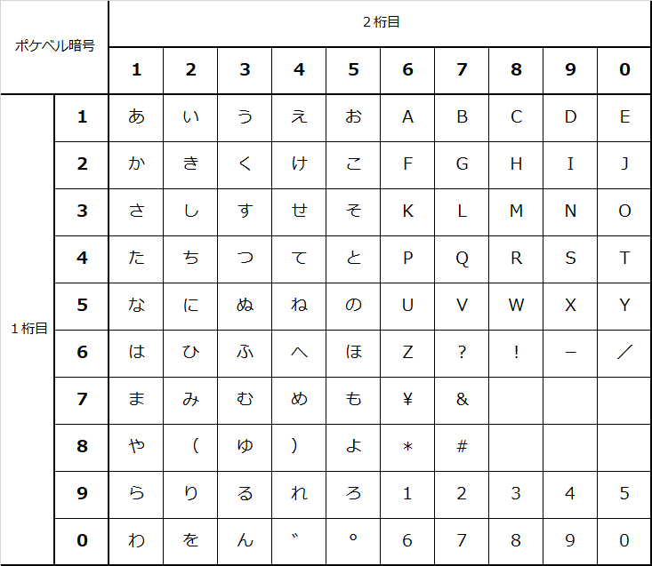

easyRSA
Created by Dit-Lab.(Daiki Ito)
ブラウザでRSA暗号の「鍵生成」→「暗号化」→「復号」まで体験することができます
RSA暗号とは
公開鍵暗号方式で使われる代表的な暗号アルゴリズム。大きな数の素因数分解が計算量的に困難である性質を利用しています。
1. 鍵生成
素数を選択して公開鍵と秘密鍵のペアを生成
2. 暗号化
公開鍵を使ってメッセージを暗号化
3. 復号
秘密鍵を使って暗号文を元に戻す
使い方
1
役割を決める
ペアで「受信者」と「送信者」の役割を決めましょう
2
鍵を生成
受信者は「鍵生成」で公開鍵と秘密鍵を作成し、公開鍵を送信者に渡します
3
暗号化
送信者は「暗号化」で平文を公開鍵で暗号化し、受信者に渡します
4
復号
受信者は「復号」で暗号文を秘密鍵で復号します
便宜上、文字の数値化にポケベル暗号を使用しています（本来は文字コードを使用）
ポケベル暗号表（10×10）
| 0 | 1 | 2 | 3 | 4 | 5 | 6 | 7 | 8 | 9 | |
|---|---|---|---|---|---|---|---|---|---|---|
| 0 | ー | 。 | 、 | ゛ | ° | ？ | ！ | |||
| 1 | あ | い | う | え | お | |||||
| 2 | か | き | く | け | こ | |||||
| 3 | さ | し | す | せ | そ | |||||
| 4 | た | ち | つ | て | と | |||||
| 5 | な | に | ぬ | ね | の | |||||
| 6 | は | ひ | ふ | へ | ほ | |||||
| 7 | ま | み | む | め | も | |||||
| 8 | や | ゆ | よ | |||||||
| 9 | ら | り | る | れ | ろ |
3桁の数字
| 数字 | 文字 | 数字 | 文字 | 数字 | 文字 | 数字 | 文字 |
|---|---|---|---|---|---|---|---|
| 100 | ０ | 101 | わ | 105 | を | 110 | ん |
| 111 | １ | 112 | ぁ | 122 | ぃ | 124 | Ｉ |
| 132 | ぅ | 135 | Ｕ | 142 | ぇ | 144 | Ｄ |
| 152 | ぉ | 154 | Ｅ | 155 | Ｏ | 222 | ２ |
| 224 | Ｂ | 233 | Ｘ | 234 | Ｋ | 235 | Ｑ |
| 333 | ３ | 334 | Ｃ | 335 | Ｓ/Ｚ | 432 | っ |
| 444 | ４ | 445 | Ｔ | 555 | ５ | 554 | Ｎ |
| 624 | Ｆ | 635 | Ｐ/Ｖ | 666 | ６ | 664 | Ｈ |
| 734 | Ｍ | 777 | ７ | 812 | ゃ | 815 | Ｙ |
| 824 | Ｊ | 832 | ゅ | 852 | ょ | 888 | ８ |
| 934 | Ｌ | 944 | Ｒ | 999 | ９ | 1015 | Ｗ |
濁点・半濁点は基本文字 + ゛(4) または °(6) で表現します。例: が = か(21) + ゛(4)
10×10表の使い方: 縦軸と横軸の交点が文字コードです。例: あ = 11（縦1、横1）
キーボードショートカット
Ctrl + D
ダークモード切り替え
Alt + 1~4
タブ切り替え
Ctrl + Enter
暗号化/復号実行
鍵生成
公開鍵と秘密鍵のペアを生成します
素数の選択
暗号化
公開鍵を使ってメッセージを暗号化します

平文の入力
全角ひらがな、全角英数字・記号で入力してください
公開鍵の入力
復号
秘密鍵を使って暗号文を元のメッセージに戻します
鍵の入力
暗号文の入力
スペース区切りで数値を入力してください